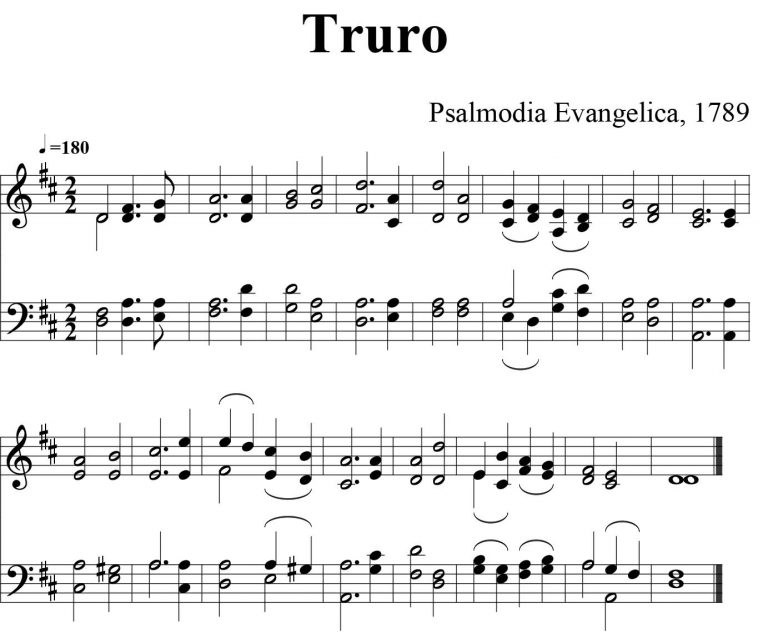

0001 All people that on earth do dwell ▲
【稱謝歌】 生命027 普天之下萬民萬族 OLD
HUNDREDTH GENEVAN 134
| 簡介
All People That on Earth Do Dwell (Psalm 100) |
| In a pairing that began in 1561, this
paraphrase of Psalm 100 by a Scot is set to a tune that a French
composer originally created for Psalm 134 in the Genevan Psalter of
1551. They have appeared together in nearly every comprehensive
English-language hymnal since then. |
|
|
|
|
1 All people that on earth do dwell,
sing to the LORD with cheerful voice.
Serve him with joy, his praises tell,
come now before him and rejoice!
2 Know that the LORD is God indeed;
he formed us all without our aid.
We are the flock he surely feeds,
the sheep who by his hand were made.
3 O enter then his gates with joy,
within his courts his praise proclaim!
Let thankful songs your tongues employ.
O bless and magnify his name!
4 Because the LORD our God is good,
his mercy is forever sure.
His faithfulness at all times stood
and shall from age to age endure.
|
普天之下萬民萬族，都當向主歡呼頌揚；
敬畏事奉，虔誠頌讚，到主面前高聲歌唱。
普世當知獨一真神，親手創造萬物萬人；
我們都是上主群羊，主必看顧，提攜，牧養。
應當稱謝入主殿門，應當讚美進主殿庭；
時常讚美祝頌其名，蒙恩之民應讚主名。
我主我神本為良善，恩主憐憫亙古皆然；
我主真理堅定不移，千秋萬世永不改變 |

 |
| |
|
http://www.sekiong.net/Music/SS/H034.htm
天下萬邦、萬國、萬民
聖詩34首「天下萬邦、萬國、萬民」
ALL PEOPLE THAT ON EARTH DO DWELL  Listen
Listen
填詞者：Wiiliam Kethe （詩篇一百篇）
作曲者：Louis Bourgeois（c1510 - c1561)
曲調 Old
Hundredth，原指「英文日內瓦詩篇集」的第100首。歌詞譯自詩篇一百篇，譯者為肯斯(Wiiliam Kethe，？-c1593或1608)，生卒年不詳，可能是蘇格蘭人，後來流亡日內瓦，他的作品在
「英文日內瓦詩篇」中有25首，這25首又無條件被「蘇格蘭詩篇」(Scottish Psalter)採用，而這首聖詩是傳入台灣最早的聖詩[1]。
聖詩 34 首分類屬於詩篇，詩篇在早期長老宗禮拜中佔有極重要的地位。加爾文 (1509 -
1564）雖然同意路德 (1483 - 1546)「音樂是上帝給人的禮物，用來讚美上帝的。」[2]的看法，加爾文卻擔心過渡重視音樂，容易喧賓奪主，使人遠離上帝的話，於是拒絕使用所有的樂器並改用齊唱的方式，史稱音樂清教徒，他和莫洛特;（Clement
Marot, 1497 - 1544）合作把詩篇翻譯成法文韻文的形式，於1539年完成17 首，1542年莫洛特又在巴黎完成新詩 30
首，1543年莫洛特出版 50 首，卻不幸於1544年去世。
比札 (Theodoer Beza, 1519
-1605)繼續翻譯的工作，他於1551年、1554年、1562年共出三版「法國詩篇集」(French Psalter)
，又稱為「日內瓦詩篇集」(Genevan Psalter)，共有 125個曲調，其中有70首由布爾喬亞 (Louis Bourgeois，c1510 -
c1561)作曲，聖詩34、508首即他最有名之作品(聖詩還選146、216首)。他不但是我長老宗最重要的作曲家，也是日內瓦詩篇的音樂主編，從此日內瓦詩篇集廣為流傳，並譯成歐洲各國文字，甚至影響英國聖詩發展
。


https://walkerhomeschoolblog.wordpress.com/2018/11/16/louis-bourgeois-and-old-hundred/
日內瓦詩篇集奠定了新教教會音樂的典範，但由於詩篇的有限以及加爾文對音樂的特殊的詮釋，他認為：
-
音樂是為人民的，所以必須簡單。
-
音樂是屬上帝的，所以必須樸素。
因此為達成簡單、樸素的目標，最好是仰賴於沒有伴奏的聲音。加爾文如此的主張，使得長老宗於改教後二百年內不能分享教會寶貴的遺產「聖詩
」。到了十八世紀長老宗才開始編輯聖詩，其中最重要的是1898年的Church
Hymnary，1927年再授權由全世界八個長老增訂重編，全部共786首加上頌詞共839首[3]，聖詩很多選自於此。1927年莫法特(James
Moffatt）和米勒 (partrtck Millrt)編寫聖詩手冊 (Handbook to the Church Hymnary)
將該集內的聖詩一一介紹作曲家，詩人略傳，是一部聖詩學很重要的參考書，也使長老宗在聖詩史上佔有一 席地位。
1696年泰特 (Nahum Tate, 1652 - 17I5)和布雷迪(Nichols
Brady, 1659-1726)兩人合編「新編詩篇 」(New Version of the Psalter)後，聖詩史學家把史登厚(Thomas
Sternhold，？-1549)和賀金斯(JOhn HopkinS，？ - 1570)1562年編的「英文日內瓦詩篇」(The
whole Book of Psalms Collected into English 或 Anglo Genevan Psalter,
1556，1558第二增訂版）稱為舊版。[4]
篇，他是聖公會重要的讚美詩作家(聖詩另含360，369首)，1680年任國王查理二世的隨身牧師。1685年任巴茲和威爾斯主教。1688年國王詹姆斯欺壓聖公會的新教徒，與其他6名主教同時提抗議書，於是被捕囚於倫敦塔，以煽動叛亂罪受審，後被宣判無罪。1688年發生革命，奧蘭治的威廉率軍從荷蘭到英格蘭支持新教，1689年詹姆斯出逃，威廉就國王位。1691年簡多馬因拒絕宣誓效忠新政權而被撤職，其為人耿直敬虔，過著74年的奮鬥生活，誠乃上帝之忠僕，因此大文豪麥考萊
(Thoma，B．Macaulay,1800-1859)譽其為「在人類不完全的範圍內，達到基督化人格最完全的理想，」[5]
巴哈生平引用這個曲調（Old Hundredth ）計十三次：分別為清唱曲17首
(BWV17)第七樂章、清唱曲28首(BWV28)第二樂章、清唱曲29首(BWV29)第八樂章、清唱曲51首(BWV51)第四樂章，清唱曲130首(BWV130)第一樂章和八樂章，清唱曲167首(BWV167)第五樂章，清唱曲184首(BWV184)第五樂章及經文歌(BWV225、231)、「371首四部聖詠集」中的no.
164及334首。
508首「天下萬幫、萬國、萬民」 Listen
填詞者： Thomas Ken, 1637-1711 （詩篇一三四篇）
 |
|
Bishop Thomas Ken |
作曲者：Louis Bourgeois（c1510 - c1561)
曲調也是 Old Hundredth ，源自詩篇一三四篇，由簡多馬主教(Bishop
Thomas Ken, 1637-1711)譯成英文詩篇，他是聖公會重要的讚美詩作家(聖詩另含360，369首)，1680年任國王查理二世的隨身牧師。
1685年任巴茲和威爾斯主教。1688年國王詹姆斯欺壓聖公會的新教徒，與其他6名主教同時提抗議書，於是被捕囚於倫敦塔，以煽動叛亂罪受審，後被宣判無罪。1688年發生革命，奧蘭治的威廉率軍從荷蘭到英格蘭支持新教，1689年詹姆斯出逃，威廉就國王位。1691年簡多馬因拒絕宣誓效忠新政權而被撤職，其為人耿直敬虔，過著74年的奮鬥生活，誠乃上帝之忠僕，因此大文豪麥考萊
(Thoma，B．Macaulay,1800-1859)譽其為「在人類不完全的範圍內，達到基督化人格最完全的理想，」[1]
巴哈生平引用這個曲調（Old Hundredth ）計十三次：分別為清唱曲17首
(BWV17)第七樂章、清唱曲28首(BWV28)第二樂章、清唱曲29首(BWV29)第八樂章、清唱曲51首(BWV51)第四樂章，清唱曲130首(BWV130)第一樂章和八樂章，清唱曲167首(BWV167)第五樂章，清唱曲184首(BWV184)第五樂章及經文歌(BWV225、231)、「371首四部聖詠集」中的no.
164及334首。
台灣教會公報第2058期 主後1991年8月11日
简介（一）
（来源：《赞美诗新编史话》）
经文：“普天下当向耶和华欢呼 ……当称谢进入他的门,当赞美进入他的院 ……” (诗 100篇)。
《称谢歌》的词，是在基督教新教中最通用、最受人喜爱的赞美诗之一， 它的作者基思
(W．Kethe，约卒于l594年)，于1561年用韵文英译的诗篇第100篇，写成这首诗，是迄今通用英语韵文诗篇中最早的一版，原稿还珍藏于英国皇家博物馆。
基思的生平和早期生活不得而知，只知他大约是苏格兰长老会牧师，在 1563— 1569年曾在英国军队中作随军牧师。当英国女皇玛利亚迫害新教时
(1555一1558)他流亡瑞士日内瓦，直到
1559年返回英国。在那里基思联系新教信徒，并从事编译英文圣经、韵文诗篇工作。因在宗教改革初期，有一部分改革家和教派认为只有圣经具有至高无上的权威，只有圣经是崇拜的中心，所以在崇拜中只准许读圣经或唱《诗篇》。
《诗篇》虽然内容丰富，且一直就是犹太教的传统赞神颂歌，但从教义来说毕竟是旧约的产物，未能完全表达新约的教义精神；并且原文为希伯来文，译成其他各国文字时，都无法保留原来的诗律、格局、韵脚、对偶等特点，最多只能将意义译出，每句变成为长短不齐的散文，既失掉原来的诗意，也难于适合歌唱的节拍和旋律，记忆、朗诵都有较大的困难，为了补救这些缺点，长老会的创始人加尔文
(见第5首注①)几经努力，终于在
1562年译成了一部具有诗的体裁的《日内瓦诗篇》，流行于各国新教中，并先后被译为各国文字。基思就在《日内瓦诗篇》的基础上编译了325首英文诗体的诗篇。
这首《称谢歌》是其中最通行的一首，是根据诗篇
100篇1至3节而编写的。他在日内瓦时首先出版了25首《诗篇赞美诗》，这首《称谢歌》就是收在他的第一版日内瓦版的诗篇赞美诗集中。
《新编》所采用的曲调，据五线谱载源于1789年的英国圣诗。该诗集全名为《供公共崇拜采用的诗篇与圣诗选辑》，是一本三声部合唱的乐谱。《新编》还在该页的下端注明通用调：399首《三一颂》。按《三一颂》调乃布儒瓦 (事略参阅第399首)为日内瓦诗篇第 100篇所谱的，所以至今仍通称为《老100篇》。
这首《称谢歌》的曲调名为《TRUYO》，收集在1789年出版的《诗篇赞美诗集》 (即英国圣诗选集) 中的第二部分。该诗集为威廉姆斯(T．Williams)主编，原曲作者不详，但曲调传说是由梅森
(事略参阅第75首)配以和声。
2019-04-13 18:33:53

诗1:1：不从恶人的计谋，不站罪人的道路，不坐亵慢人的座位。
今天分享给大家的是《新编赞美诗》的第十五首——《称谢歌》。
这首赞美诗又是一首古典传统圣诗，由基思（William Kethe）作词于1561年，源于《英国圣诗集》。
基思生活的时代，正是宗教改革的时代，那时的英国正处在女王玛丽.都铎的统治下。
玛丽与西班牙王朝关系亲密，是宗教改革的强硬反对者。她登上王位后，立即宣布恢复天主教，并对新教徒采取了高压政策，屠杀其中的激进分子。在她统治5年中，有300余人被烧死在火刑柱上，被迫流亡国外的新教徒不计其数。
因着她的残忍和暴行，被称为“血腥玛丽”，这一称谓流行于后世恐怖故事中，被大众熟知。

宗教改革以前，普通信徒是无法阅读《圣经》的，一方面，教士掌管圣经的解释权，不允许其他人和团体对圣经有多样化的解释；另一方面，那时的《圣经》只有拉丁文一种版本，老百姓大多数不识字，认识拉丁文的就更少，普通信徒也没有能力阅读《圣经》。
所以，宗教改革的一大重要任务是翻译《圣经》，而在血腥玛丽的迫害下，英国大多数有学问的人都流落到了日内瓦，那里受到新教骨干约翰.加尔文等人的影响，教会可以自由地翻译圣经和圣诗，不必限制于罗马教会和英格兰统治者。于是那里诞生的《圣经》就是著名的《日内瓦圣经》。

在这批流亡的学者中，就有《称谢歌》的作者基思，他不仅协助翻译了《日内瓦圣经》，还贡献了25首赞美诗，收录于《日内瓦赞美诗集》中。
今天，每一个基督徒都可以自由地阅读《圣经》、吟唱赞美，除了感谢上帝，也不应忘记宗教改革运动中那些献出才华甚至生命的先贤。

曲谱：


|
Short
Name: |
Charles
Burney |
|
Full
Name: |
Burney,
Charles, 1726-1814 |
|
Birth
Year: |
1726 |
|
Death
Year: |
1814 |

A music historian
and composer, Burney attended Shrewsbury School and the Free School,
Chester. He was apprenticed to Thomas Arne from 1744 to 1746. In
1749, he became organist at St. Dionis’ Backchurch, London. In 1751
moved to King’s Lynn, Norfolk, where he taught and played the organ.
His works include:
Music, Men,
and Manners in France and Italy, 1770
A General History of Music, from the Earliest Ages to the
Present Period (London: 1776-89)
Sources:
Findagrave, accessed 18 Nov 2016
Nutter, p. 454
© The Cyber
Hymnal™. Used by permission. (www.hymntime.com)
Notes
TRURO is an
anonymous tune, first published in Thomas Williams's Psalmodia
Evangelica, (second vol., 1789) as a setting
for Isaac Watts' "Now to the Lord a noble song." Virtually
nothing is known about this eighteenth-century British editor of
the two-volume Psalmodia Evangelica, a
collection of three-part psalm and hymn tunes for "Churches,
Chapels, and Dissenting Meetings in England, Scotland, and
Ireland." The tune is named for an ancient city in Cornwall,
England, famous for its cathedral and for its pottery.
TRURO's
opening phrase ascends the octave. The entire tune is influenced
by George F. Handel's style and bears relationship to similar
tunes (see comments at PHH
412). Sing stanzas 1 and 5 in unison, stanzas 2-4 in harmony
with stanza 4 unaccompanied. Use clear articulation on the organ
and a moderate tempo. Try also to frame the singing of this hymn
with "Clap Your Hands" (166); that rendition would be very
fitting for Ascension services. Wren believes that more
meditative tunes than TRURO are also appropriate for this text;
try the familiar ROCKINGHAM (178).
--Psalter
Hymnal Handbook
TRURO
(HYMN TUNE) BY T WILLIAMS
TONY
MANSELL17 OCTOBER 2020
Lift Up
Your Heads, Ye Mighty Gates (Truro)
https://www.youtube.com/watch?v=gMuwbgpfo_8
Included in Psalmodia Evangelica 1789 / Hymns and Psalms –
Methodist
The MHB(1933) contained 2 tunes, one LM and one 7 7.7 7.7 7.
The LM tune was set to ‘Jesus shall reign where’re the sun’
(number 272) and attributed to Charles Burney (1726-1814;
Lightfoot 195f, which refers to Psalmodia Evangelica) Wesley’s
Hymns (1877) had only the LM tune set to ‘The earth with all her
fulness owns’, attributed to Burney; this is the same tune as
H&P 22(ii) set to ‘Give to our God immortal praise’ (Watson &
Trickett 22/49) but there noted as anonymous, from T Williams
Psalmodia Evangelica of 1789. Thus … Burney = Williams.
(Reverend Colin C Short)
Text:
This hymn is attributed to William Kethe, of whom very little is known other
than that he lived in the sixteenth century and was exiled to the European
continent during the reign of Queen Mary in England (1553-1558). Kethe likely
remained in exile after Queen Mary's death. He is credited with twenty-five
psalm paraphrases for English-language psalters in the late 1550s, but this text
is the only one still in use today. Since it was written, “All People That on
Earth Do Dwell” has appeared in over a thousand editions of English-language
psalters and hymnals (Nicholas Temperley, Hymnal 1982 Companion, p.
699), and “no comprehensive modern English-language hymnal can do without it.” (Temperley,
p. 697)
“All People That on Earth Do Dwell” is a metrical paraphrase of Psalm 100. There
are four stanzas to the hymn, but many hymnals add a doxology after the fourth
stanza. Many hymnals have updated Kethe's frequently quaint syntax, especially
in the third stanza. Psalm 100 has four groups of three poetic lines (the first
of which is numbered as two verses); the stanzas of this hymn correspond to
these groups.
Tune:
This psalm is sung almost exclusively to the well-known tune OLD HUNDREDTH,
which is sometimes called SAVOY or GENEVAN 134, after its original text in the Genevan
Psalter. In fact, this association gave the tune its common title. It is
“one of the noblest and most loved tunes in all of Christendom.” (Psalter
Hymnal Handbook, ed. Emily R. Brink & Bert Polman, p. 270) This Genevan
psalm tune is often attributed to Louis Bourgeois, who edited the original Genevan
Psalter. Most hymnals contain this tune, paired with “All People That on
Earth Do Dwell,” or “Praise God From Whom All Blessings Flow,” or both.

 Louis Bourgeois
Louis Bourgeois
There are two versions of the tune with respect to rhythm. Usually, when the
tune is used with this text, the original rhythm is maintained. However,
congregations may be tempted to sing the altered, isorhythmic version, because
that is often the version sung with the Doxology, “Praise God From Whom All
Blessings Flow.”
Notes
This tune is likely the
work of the composer named here, but has also been attributed to others as
shown in the instances list below.
According to the Handbook
to the Baptist Hymnal (1992), Old 100th first appeared in the Genevan
Psalter, and "the first half of the tune contains phrases which may
have existed in plainsong and folk song for centuries. The latter part of
the tune and its overall form is the work of Louis Bourgeois, John Calvin's
musical collaborator in the formation of the Genevan Psalter." (p.
88)
When/Why/How:
This hymn can be used as an opening hymn, or any place where a song of joyful
praise is needed. Many composers and arrangers have written settings for this
tune, from the four-part harmonizations of Claude Goudimel and John Dowland in
the sixteenth and seventeenth centuries, to the grand coronation anthem by Ralph
Vaughan Williams in 1953, to the numerous organ settings available today for
service music and congregational accompaniment. “Praise
God!”is a jubilant arrangement for organ and handbells by Fred Bock that
would work well as a prelude. David Friddle has written two organ settings of
the tune in his collection “Sunday
Finest”. “Three
Hymn Embellishments” by Robert A. Hobby includes an arrangement of this hymn
for organ accompaniment of congregational singing.
Notes
A call to praise the
LORD for showing grace and faithfulness toward "the sheep of his pasture"
(v.3).
Scripture References:
st. 1 = vv. 1-2
st. 2 = v. 3
st. 3 = v. 4
st. 4 = v. 5
Psalm 100 brings to a
close a collection of psalms that celebrate the LORD's righteous rule over
all creation (93, 95-99). Like the others, it was composed to be sung by the
Levites at a high religious festival that annually celebrated the LORD's
kingship over the entire world (perhaps the Feast of Tabernacles). Psalm 100
is the Hebrew equivalent of a cheerleader's shout–a strong call to worship
the LORD with joyful song (st. 1, 3): the LORD is the one true God who made
us to be "the sheep of his pasture" (st. 2), and God's love and faithfulness
never fail (st. 4).
The Psalter Hymnal includes
both an English and a French versification. The English text by William
Kethe (b. Scotland [?], date unknown; d. Dorset, England, c. 1594) is the
oldest metrical psalm text in the Psalter Hymnal It first appeared
in the Anglo-Genevan Psalter of l561 and in John Day's Psalmes of David
in English Metre (PHH
69), also of 1561. Since then it has been published in virtually all
English-language psalters and hymnals. The French text (opposite 101 in the Psalter
Hymnal) is taken from the French hymnal Psaumes et Cantiques (1891);
it is included as a tribute to the original language of the Calvinist
Psalter.
Both the time and place of
Kethe's birth and death are unknown, although scholars think he was a
Scotsman. A Protestant, he fled to the continent during Queen Mary's
persecution in the late 1550s. He lived in Geneva for some time but traveled
to Basel and Strasbourg to maintain contact with other English refugees.
Kethe is thought to be one of the scholars who translated and published the
English-language Geneva Bible (1560), a version favored over the King James
Bible by the Pilgrim fathers. The twenty-five psalm versifications Kethe
prepared for the Anglo-Genevan Psalter of 1561 were also adopted into the
Scottish Psalter of 1565. His versification of Psalm 100 is the only one
that found its way into modern psalmody.
Liturgical Use:
Many uses beyond its traditional role at the beginning of worship.
--Psalter Hymnal
Handbook
===========================
All people that on earth do dwell. [Ps. c.] The
memories which have gathered round this rendering of the 100th Psalm,
together with the uncertainty of its authorship, require us to trace its
history, to note its true text, and to determine, if possible, its author,
I.History.—It appeared for the first time in the Psalter, published
in London by John Daye, in 1560-1, and in the Anglo-Genevan Psalter,
printed at Geneva, in 1561. In the full English Psalter of 1562 it
is not found, but in an Appendix to the edition of 1564 (British
Museum) it is given, and again in the body of the work in 1565 (Brit. Mus.).
It was also included in the Scottish Psalter of 1564. From 1564 it
reappeared in all editions of the English and Scottish Psalters,
and is also found in most hymnbooks published during the past 150 years.
II. Text.—The original text from the only copy of Daye's Psalter,
1560-1, known, and in which it is printed in the old black-letter text of
the period, is as follows:—
"Psalme C.
Al people yt on earth do dwel,
sing to yc lord, with chereful voice
Him serve wt fear, his praise forth tel,
come ye before him and reioyce.
The Lord ye know is God
in dede,
with out our aide, he did us make:
We are his folck, he doth us fede,
and for his Shepe, he doth us take.
Oh enter then his gates
with prayse
approche with ioye, his courtes unto:
Praise, laude, and blesse his name alwayes,
for it is semely so to doe.
For why? the Lord our
God is good,
his mercy is for euer sure:
His trueth at all tymes firmely stood
and shall from age to age indure."
[Orig. ed. 1560-1, London, J. Daye.]
In what form this text
reached Geneva, whether in manuscript or in a copy of Daye's edition, cannot
be determined.
III. Authorship.—This is somewhat difficult to determine. The evidence is
this:—
1. Daye's Psalter, 1560-1. No signature.
2. Anglo-Genevan Psalter, 1561. "Tho. Ster."
3. Britwell Psalter, 1561. "W. Ke."
4. Scottish Psalter, 1564. " W. Ke."
5. Daye's Appendix, 1564. No signature.
6. Daye's Psalter, 1565. No signature.
7. Daye's Psalter, 1566. No signature.
8. Crespin's Psalter (Geneva), 1561). No signature.
9. Daye's Psalter, 1579. No signature.
10. Daye's Psalter, 1587. "J. H."
These are all the Psalters known which have any value in determining the
question. This evidence is certainly in favour of W. Kethe, and this is the
more conclusive when we remember that the Britwell Psalter, 1561,
and the Scottish Psalter of 1564, are reprints of the Anglo-Genevan
Psalter, with
such corrections in spelling as an English work printed on the Continent
would call for, and constitute together a distinct family from the Daye
Psalters. The metre is also in Kethe's favour, and decisive against both
Sternhold and Hopkins. Its correct subscription is therefore "W. Kethe,
1560-1."
Although the history of tunes forms no part of our work, a few facts
concerning "The Old Hundredth " may not be unacceptable. It first appeared
in the enlarged edition of the French Genevan Psalter, published in 1551, as
the tune to Ps. cxxxiv. The first half of the tune is a musical phrase which
is found in various combinations both before and after that time; but the
latter part of the tune, and the form of the whole of it, is the work of
Louis Bourgeois, who, and not Guillaume Franc, is now known to be the editor
of this edition of the French Genevan Psalter. Kethe's version of Ps. c. was
doubtless written for this tune.
-- Excerpts from John
Julian, Dictionary of Hymnology (1907)
Text:
In about 1674, Bishop Thomas Ken wrote three hymns for morning, evening, and
midnight as an addition to his A Manual of Prayers for the Use of the
Scholars of Winchester College. These hymns were published by Ken in a
pamphlet in 1694, and were included in the Manual in its 1695
edition. “Praise God, From Whom All Blessings Flow” was the text of the final,
doxological stanza for all three of them. It is now well-known on its own as a
doxology, or as a concluding stanza for other hymns, such as “All Creatures of
Our God and King,” or “All People That on Earth Do Dwell.”

Tune:
OLD HUNDREDTH is by far the most common tune to which this text is sung. It is
sometimes called SAVOY, or GENEVAN 134 after its original text in the Genevan
Psalter. This psalm tune is often attributed to Louis Bourgeois, who edited the
Genevan Psalter of 1551, in which it first appeared. The tune became associated
with William Kethe's version of Psalm 100 in the Anglo-Genevan Psalter of 1560,
from which the name OLD HUNDREDTH is derived.
There are two versions of the tune with respect to rhythm. Usually, when the
tune is used with “All People That on Earth Do Dwell,” the original rhythm is
maintained. However, many congregations are more familiar with the altered,
isorhythmic version, because that is often the version sung with this doxology.
When/Why/How:
This song is often sung at the beginning of worship or at the presentation of
the offering. In some churches, it is sung every Sunday. To avoid monotony, try
a longer setting of the Doxology text to original music such as the choral
arrangement by David Hedrick titled “Alleluia,
Praise God!” (sung unaccompanied or with a simple string bass line), or a
tune by an anonymous nineteenth-century American composer, edited by William
Rowan in “Praise
God From Whom All Blessings Flow.” Because this text is a single, well-known
stanza, it is often used as a bridge within a larger choral anthem. Sometimes it
is set to original music, and at other times, the traditional tune is used. “Sing!” is
an original composition by Cindy Berry, in which the doxology text is used as a
bridge, set to an altered version of OLD HUNDREDTH. Another example of this very
short text as part of a larger work is in “Thanks
and Blessings Flow,” in which “Praise God, From Whom All Blessings Flow,”
set to original music, is the bridge before the last verse of “Now Thank We All
Our God.” Optional brass, percussion, and congregational participation are
included.
Tiffany Shomsky,
Hymnary.org
https://www.umcdiscipleship.org/resources/history-of-hymns-all-people-that-on-earth-do-dwell
"All People that on Earth Do Dwell"
William Kethe
UM Hymnal, No. 75
All people that on earth do dwell,
Sing to the Lord with cheerful voice.
Him serve with mirth, his praise forth tell,
Come ye before him and rejoice.
This is probably the oldest continuously sung congregational song in North
America.
When the first British explorers arrived in Jamestown Island on May 14, 1607, to
establish the Virginia colony on the banks of the James River near Chesapeake
Bay, they undoubtedly brought with them a Psalter, a collection of metrical
psalms. Most likely, the book was Psalms of David in English Metre, by Thomas
Sternhold and others (1561).
The followers of John Calvin (1509-1564) sang only metrical psalms, or psalms
set in poetic meter based the book of Psalms. According to Calvin, these
metrical versions should neither add to nor take away from any portion of
Scripture.
Calvin employed the skills of poet Clément Marot (1496-1544) to translate the
psalms into French singing versions. The work was continued by Calvin’s
successor and poet, Théodore de Bèze (1519-1605).
Loys “Louis” Bourgeois (c. 1510-1560) was a French composer and the main
compiler of tunes for the Genevan Psalter (first edition in 1539, with
succeeding editions in 1542, 1543, 1551, and 1562). The tune OLD 100TH first
appeared in the 1551 edition of the Psalter; it is unclear which tunes were
composed by Bourgeois, but this one is generally attributed to him.
The English-language text is attributed to William Kethe (d. c. 1594). According
to the Rev. Carlton Young, editor of the UM Hymnal, very little is known about
Kethe although he is believed to have been a Scotsman who was exiled to the
European continent during the reign of Roman Catholic Queen “Bloody” Mary
(1555-1558). He may have served as a messenger to others in exile in Basel and
Strassburg, working with scholars to translate the Geneva Bible (1560).
After Kethe returned to England in 1560 or 1561, he served as a rector of the
church of Childe Okeford until his death. From 1563-1569 he served as a chaplain
to the English troops serving under the Earl of Warwick.
The Authorized (King James) Version of the Bible was not available until 1611.
The version used as a basis for Kethe’s translation would have been Goostly
Psalmes, a translation of Martin Luther’s psalm versions, available as early as
1539. This translation by Miles Coverdale (c. 1488-1569) is the standard
translation for the Anglican Church and is still used today. The complete
Coverdale translation of Psalm 100 follows:
O be joyful in the Lord, all ye lands; serve the Lord with gladness, and come
before his presence with a song. Be ye sure that the Lord he is God; it is he
that hath made us, and not we ourselves. We are his people, and the sheep of his
pasture. O go your way into his gates with thanksgiving, and into his courts
with praise; be thankful unto him, and speak good of his Name. For the Lord is
gracious, his mercy is everlasting, and his truth endureth from generation to
generation.
The French practice was to assign a different tune to virtually every psalm. The
English approach to setting the psalms was to use a limited number of meters
(short meter, common meter and long meter) and therefore sing all of the psalms
to a relatively small number of tunes.
This long meter (L.M.) text has been modified in a few places for current
hymnals. The original stanzas one and two follow with modifications in
parentheses:
All people that on earth do dwell,
sing to the Lord with cheerful voice:
Him serve with fear (mirth), his praise forth tell,
come ye before him and rejoice.
The Lord ye know is God indeed,
(Know that the Lord is God indeed)
without our aid he did us make;
We are his flock (folk), he doth us feed,
and for his sheep he doth us take.
The “Doxology” that is usually sung to the melody of OLD 100TH is not by
Kethe, but is a later paring to this tune of a text by Thomas Ken (1637-1711).
Dr. Young notes that Kethe’s translation was alluded to in Shakespeare’s Merry
Wives of Windsor. Twentieth-century English composer Ralph Vaughan Williams
(1872-1958) composed an arrangement of this hymn for the coronation of Queen
Elizabeth II, June 2, 1953.
Amidst all of these dates, the important thing to remember is that William
Kethe’s text ties us with the earliest settlers in the American colonies over
400 years ago. It was not long before a Psalter was published in the American
colonies: The Bay Psalm Book (1640) was the first book published in North
America.
Dr. Hawn is professor of sacred music at Perkins School of Theology, SMU.
https://hymnstudiesblog.wordpress.com/2008/03/07/quotall-people-that-on-earth-do-dwellquot/
"ALL PEOPLE THAT ON EARTH DO DWELL"
"Serve the Lord with gladness; come before His presence with singing" (Ps.
100.2)
INTRO.:
A hymn that is taken from Ps. 100 is "All People That On Earth Do Dwell" (#57
in Hymns
for Worship Revised, and #66 in Sacred
Selections for the Church). This metrical version is usually attributed
to William Kethe. There is no definite information available about the date
and place of Kethe’s birth, but it is generally believed that he was a native
of Scotland. His early life is unknown, but he was a Puritan who, because of
the Marian persecution by Catholics of Protestants in 1555, went into exile at
Frankfort, Germany, and then in 1558 moved to Geneva, Switzerland. There, he
seems to have been engaged in helping to translate the Geneva Bible which came
out in 1560. Also he assisted with the publication of John Day’s Anglo-Genevan
Psalter of 1561 where his renderings of 25 psalms appeared. "All People
that on Earth Do Dwell" was included in that first edition. Later editions
came out in 1562 and 1564. The Psalter editors
often tinkered with the metrical psalm arrangements from one edition to the
next, which may explain why there are some variations in the wording of this
one in different songbooks. After Elizabeth I came to the throne, Kethe
returned to England in 1561 where he became minister of the church of Childe
Okeford in Dorsetshire, and in 1563 and again in 1569 served as chaplain to
Elizabeth’s forces under the Earl of Warwick at Havre. His death is usually
given as having occurred on June 6, 1594, at Dorsetshire, England, but various
sources place it as early as 1593 or as late as 1608.
What gave this psalm its popularity was the tune (Old Hundredth) often
attributed to Guillaume Franc (1520-1570). It is sometimes dated 1543. It was
apparently adapted by Louis Bourgeois (1510-1561). Bourgeois was born in
Paris, France, but followed John Calvin to Geneva, where he was song director
at the Church of St. Peters. The melody first appeared in the Genevan
Psalter of 1551, which Bourgeois edited, with Ps. 134, but it was used
with Ps. 100 in Kethe’s Four-Score
and Seven Psalms of David published in 1561 at Geneva, and has been
associated with it ever since. Originally, it had a rather sprightly rhythm,
which Queen Elizabeth scornfully called one of those "Geneva jigs." The more
sedate form and modern harmonization that is familiar today is sometimes
credited to Joseph Barnby (1838-1896). The "Doxology" that some of our books
have with this tune (used as a "chorus" with "All People That On Earth Do
Dwell" in Sacred
Selections and separately in Hymns
for Worship Revised) was not the work of Kethe but of a bishop in the
Anglican Church, Thomas Ken (1637-1711). A teacher at Winchester College,
Oxford, he wrote three hymns for his students to sing–one in the morning, one
in the evening, and one at midnight. The "Doxology" made up the closing stanza
of each one. It was first published in 1673 or 1674 in Ken’s Manual
of Prayers for the Use of the Scholars of Winchester College.
Kethe had published his own doxology:
"To Father, Son, and Holy Ghost, The God Whom heaven and earth adore,
From men and from the angel host Be praise and glory evermore."
Notice the difference in rhyming scheme. Both Kethe’s psalm and doxology are
A-B-A-B, whereas Ken’s doxology is A-A-B-B. Among hymnbooks published by
members of the Lord’s church during the twentieth century for use in churches
of Christ, "All People That On Earth Do Dwell" apppeared in the 1937 Great
Songs of the Church No. 2 edited by E. L. Jorgenson; both it and the
"Doxology" were used in the 1963 Abiding
Hymns edited by Robert Welch and the 1963 Christian
Hymnal edited by J. Nelson Slater. Only the doxology appeared in the
1921 Great
Songs of the Church No. 1 also edited by Jorgenson, as well as in the
1948 Christian
Hymns No. 2 and the 1966 Christian
Hymns No. 3 both edited by L. O. Sanderson. Today both are found in the
1971 Songs
of the Church, the 1990 Songs
of the Church 21st C. Ed., and the 1994 Songs
of Faith and Praise, all edited by Alton H. Howard; the 1978/1983 (Church)
Gospel Songs and Hymns edited by V. E. Howard; the 1986 Great
Songs Revised edited by Forrest M. McCann; and the 1992 Praise
for the Lord edited by John P. Wiegand; in addition to Hymns
for Worship, Sacred
Selections, and the 2007 Sacred
Songs of the Church edited by William D. Jeffcoat (the last of which also
has the Doxology as a separate number).
The song suggests that we should joyfully praise God for a number of
reasons.
I. Stanza 1 implies that we should praise God because we live on the earth
created by Him
"All people that on earth do dwell, Sing to the Lord with cheerful voice;
Him serve with mirth, His praise forth tell; Come ye before Him and rejoice."
A. All people that on earth do dwell should praise God because the whole
earth is the Lord’s: Ps. 24.1
B. One way to express this praise is to sing to the Lord with cheerful voice:
Ps. 33.1-3
C. Another way to express our praise is to serve Him with mirth: Ps. 72.8-11
II. Stanza 2 says that we should praise God because He made us without our aid
"Know that the Lord is God indeed; Without our aid He did us make;
We are His flock, He doth us feed, And for His sheep He doth us take."
Some versions begin, "The Lord, ye know, is God indeed."
A. The Lord, Jehovah, is God alone: Ps. 96.4-6
B. Those who believe the Bible understand that we are fearfully and
wonderfully made by this great God: Ps. 139.14
C. Therefore, as His creation, He wants us to be His people. The original
read "folck," an old spelling of folk. However, since the stanza also mentions
sheep, someone inadvertently printed "flock" instead, and this has remained
ever since: Ps. 95.6-7
III. Stanza 3 adds that we should praise God because He alone is worthy of our
praise.
"O enter then His gates with joy, Within His courts His praise proclaim;
Let thankful songs your tongues employ, O bless and magnify His holy name."
Some versions read, "O enter then His gates with praise, Approach with joy His
courts unto;
Praise, laud, and bless His name always; For it is seemly so to do."
A. We should praise Him as we enter His gates with joy: Ps. 9.14, 122.1-2
B. We should praise Him as we stand in His courts: Ps. 65.1-4
C. We bless and magnify His name because He alone is holy and righteous: Ps.
7.17
IV. Stanza 4 concludes that we should praise God because He is good.
"Because the Lord our God is good, His mercy is forever sure;
His truth at all times firmly stood, And shall from age to age endure."
Some versions begin, "For why? The Lord, our God, is good."
A. All the blessings that we enjoy in this life remind us that the Lord is
good: Ps. 34.8
B. One of those blessings is His great mercy to sinful mankind: Ps. 101.1
C. Another is His truth which has always stood and will always stand: Ps.
117.1-2
CONCL.:
The psalm and the song both encourage us to
"Praise God from whom all blessings flow; Praise Him all creatures here below;
Praise Him above ye heavenly host; Praise Father, Son, and Holy Ghost."
(There should be no "s" on host; "hosts" does not completely rhyme with
"Ghost.") It is interesting to sit down with a Bible open to Ps. 100, a
songbook open to this hymn, and compare the two. Back when this song was
written, it was common in most non-Catholic churches to sing only metrical
versions of the Old Testament Psalms. Nowhere does the Bible teach that we
must use only the Psalms in our worship, but we would do well to include them
because of their reverence, devotion, and praise to God. In this way our
hearts can be filled with joyful praise as we join our voices together with
"All People That On Earth Do Dwell."
https://www.hymnologyarchive.com/all-people-that-on-earth
Psalm 100
with OLD 100TH (GENEVAN 134)
I. Text: Origins
During the tumultuous religious upheaval of the Reformation, a group of
British Protestants migrated to Geneva, mostly for the purpose of escaping the
wrath of Queen Mary I (reigned 1553–1558). While in Geneva, the English
Protestants learned from the French disciples and colleagues of Jean Calvin,
(1509–1564), who had been preparing a complete metrical paraphrase of the
Psalms. As a basis for the English edition, the Reformers used the work of
Thomas Sternhold, a former “groom of robes” of King Edward VI (reigned
1547–1553). “All people that on earth do dwell,” a metrical paraphrase of
Psalm 100, was contributed to the effort by William Kethe (d 1594), one of the
Anglo-Genevan reformers, and first published in five stanzas in Foure score
and seuen Psalmes of Dauid in Englishe mitre (Geneva, 1560/1), which was
appended to The forme of prayers and ministration of the sacraments, &c. vsed
in the English Congregation at Geneua. This version of the psalter was
reprinted in London in 1561 (Fig. 1).


View fullsize Foure_score_and_seuen_Psalmes_of-STC-2428-1561-112.jpg View
fullsize Fig. 1. Foure score and seuen Psalmes of David in Englishe mitre
(London, 1561). Fig. 1. Foure score and seuen Psalmes of David in Englishe
mitre (London, 1561).
In the first complete edition of the English psalter, The whole booke of
Psalmes collected into Englysh metre by T. Starnhold, I. Hopkins, & others
(London: John Day, 1562), Kethe’s paraphrase was replaced with “In God the
Lorde be glad and lyght” by John Hopkins. For unknown reasons, subsequent
editions reverted to the paraphrase by Kethe; Kethe’s text has found an
enduring place in English hymnals ever since.
II. Text: Development
Some hymnals and psalters carry a revised version of the text from the
Scottish Psalms of David in Meeter (Edinburgh, 1650 | Fig. 2). In this
version, the line “Him serve with fear” has been changed to read “Him serve
with mirth,” which better reflects the text of Psalm 100:2, “Serve the Lord
with gladness” (KJV, 1611). Kethe’s line, “The Lord, ye know, is God indeed,”
was changed to “Know that ye Lord is good indeed,” although this was corrected
later back to God, in keeping with the Scripture. In Psalm 100:3, the KJV
English reads “we are his people,” which is represented in Kethe as “we are
his folk,” whereas the Scottish gives “we are his flock,” reflecting the
subsequent phrase about sheep. The change to “flocke” had appeared in some
editions of Sternhold & Hopkins as early as 1582.
View fullsize Fig. 2. Psalms of David in Meeter (Edinburgh, 1650). Fig. 2.
Psalms of David in Meeter (Edinburgh, 1650).
III. Tune
The tune used by the English reformers for Psalm 100 was borrowed from the
French psalters, where it had been used for Psalm 134. The melody is generally
credited to French composer Loys Bourgeois (ca. 1510–1559), and it was first
printed in Pseavmes octantetrois de Dauid mis en rime Francoise (Geneva, 1551
| Fig. 3). The French paraphrase is by Theodore Beza (1519–1605). In some
hymnals, the tune has appeared with its French designation, GENEVAN 134. In
the English psalters, it was first printed as PSALM 100 in the Anglo-Genevan
Foure score and seuen Psalmes of David (1560/1 | Fig. 1 above).

View fullsize Fig. 3. Pseavmes octantetrois de Dauid (Geneva, 1551). Fig.
3. Pseavmes octantetrois de Dauid (Geneva, 1551).
In the English tradition, the tune was originally known simply as PSALM
100, but it came to be called OLD 100TH (OLD HUNDREDTH) following the
publication of the New Version of the Psalms of David by Nicholas Tate and
Nahum Brady in 1696 and subsequent attempts by composers to write new tunes
for this Psalm. It was first dubbed “Old” in J. Boyse, Family Hymns for
morning and evening worship. . . . All taken out of the Psalms (Dublin:
Matthew Gunne, 1701). This tune is sometimes known colloquially as “The
Doxology,” owing to its frequent pairing with the text “Praise God from whom
all blessings flow” by Thomas Ken (1637–1711).
by CHRIS FENNER for Hymnology Archive 29 August 2018
Related Resources: William Henry Havergal, A History of the Old Hundredth
Psalm Tune, with Specimens (NY: Mason Brothers, 1854): Archive.org
Louis Benson, “All people that on earth do dwell,” Studies of Familiar
Hymns, Second Series (Philadelphia: Westminster Press, 1923), pp. 1–11:
Archive.org
Erik Routley, “All people that on earth do dwell,” Hymns and the Faith
(Greenwich, CT: Seabury Press, 1956), pp. 19–22.
Pierre Pidoux, Le Psautier huguenot du XVIe siècle, 3 vols. (Bärenreiter,
1962): WorldCat
Fred L. Precht, “All people that on earth do dwell,” Lutheran Worship
Hymnal Companion (St. Louis: Concordia, 1992), p. 452.
Beth Quitslund, The Reformation in Rhyme: Sternhold, Hopkins, and the
English Metrical Psalter, 1547–1603 (Burlington, VT: Ashgate, 2008): Amazon
Beth Quitslund & Nicholas Temperley, The Whole Book of Psalms: A Critical
Edition (Tempe, AZ: ACMRS, 2018), vol. 1, pp. 313–314; vol. 2, pp. 723–726:
Amazon
“All people that on earth do dwell,” Hymnary.org: https://hymnary.org/text/all_people_that_on_earth_do_dwell
J.R. Watson, “All people that on earth do dwell,” The Canterbury Dictionary
of Hymnology: http://www.hymnology.co.uk/a/all-people-that-on-earth-do-dwell.
Nicholas Temperley, “OLD HUNDREDTH,” The Canterbury Dictionary of
Hymnology: http://www.hymnology.co.uk/o/old-hundredth
Hymn Tune Index: http://hymntune.library.uiuc.edu
https://hymnary.org/person/Kethe_William
Short Name: William Kethe
Full Name: Kethe, William, d. 1594
Death Year: 1594
William Kethe (b. Scotland [?], d. Dorset England, c. 1594). Although both the
time and place of Kethe's birth and death are unknown, scholars think he was a
Scotsman. A Protestant, he fled to the continent during Queen Mary's persecution
in the late 1550s. He lived in Geneva for some time but traveled to Basel and
Strasbourg to maintain contact with other English refugees. Kethe is thought to
be one of the scholars who translated and published the English-language Geneva
Bible (1560), a version favored over the King James Bible by the Pilgrim
fathers. The twenty-five psalm versifications Kethe prepared for the Anglo-Genevan
Psalter of 1561 were also adopted into the Scottish Psalter of 1565. His
versification of Psalm 100 (All People that on Earth do Dwell) is the only one
that found its way into modern psalmody.
Bert Polman
========================
Kethe, William, is said by Thomas Warton in his History of English Poetry, and
by John Strype in his Annals of the Reformation, to have been a Scotsman. Where
he was born, or whether he held any preferment in England in the time of Edward
VI., we have been unable to discover. In the Brieff discours off the troubles
begonne at Franckford, 1575, he is mentioned as in exile at Frankfurt in 1555,
at Geneva in 1557; as being sent on a mission to the exiles in Basel, Strassburg,
&c, in 1558; and as returning with their answers to Geneva in 1559. Whether he
was one of those left behind in 1559 to "finishe the bible, and the psalmes
bothe in meeter and prose," does not appear. The Discours further mentions him
as being with the Earl of Warwick and the Queen's forces at Newhaven [Havre] in
1563, and in the north in 1569. John Hutchins in his County history of Dorset,
1774, vol. ii. p. 316, says that he was instituted in 1561 as Rector of Childe
Okeford, near Blandford. But as there were two Rectors and only one church,
leave of absence might easily be extended. His connection with Okeford seems to
have ceased by death or otherwise about 1593.
The Rev. Sir Talbot H. B. Baker, Bart., of Ranston, Blandford, who very kindly
made researches on the spot, has informed me that the Registers at Childe
Okeford begin with 1652-53, that the copies kept in Blandford date only from
1732 (the earlier having probably perished in the great fire there in 1731),
that no will can be found in the district Probate Court, and that no monument or
tablet is now to be found at Childe Okeford.
By a communication to me from the Diocesan Registrar of Bristol, it appears that
in a book professing to contain a list of Presentations deposited in the
Consistory Court, Kethe is said to have been presented in 1565 by Henry Capel,
the Patron of Childe Okeford Inferior. In the 1813 edition of Hutchins, vol.
iii. pp. 355-6, William Watkinson is said to have been presented to this moiety
by Arthur Capel in 1593.
Twenty-five Psalm versions by Kethe are included in the Anglo-Genevan Psalter of
1561, viz. Ps. 27, 36, 47, 54, 58, 62, 70, 85, 88, 90, 91, 94, 100, 101, 104,
107, 111, 112, 113, 122, 125, 126, 134, 138, 142,—the whole of which were
adopted in the Scottish Psalter of 1564-65. Only nine, viz. Ps. 104, 107, 111,
112, 113, 122, 125, 126, 134, were included in the English Psalter of 1562; Ps.
100 being however added in 1565. Being mostly in peculiar metres, only one, Ps.
100, was transferred to the Scottish Psalter of 1650. The version of Ps. 104,
"My soul, praise the Lord," is found, in a greatly altered form, in some modern
hymnals.
Warton calls him ”a Scotch divine, no unready rhymer," says he had seen a
moralisation of some of Ovid by him, and also mentions verses by him prefixed to
a pamphlet by Christopher Goodman, printed at Geneva in 1558; a version of Ps.
93 added to Knox's Appellation to the Scottish Bishops, also printed at Geneva
in 1558; and an anti-papal ballad, "Tye the mare Tom-boy." A sermon he preached
before the Sessions at Blandford on Jan. 17, 1571, was printed by John Daye in
1571 (preface dated Childe Okeford, Jan. 29,157?), and dedicated to Ambrose Earl
of Warwick.
[Rev James Mearns, M.A].
-- John Julian, Dictionary of Hymnology (1907)
====================
Kethe, William, p. 624, i., line 30. The version which Warton describes as of
Psalm 93 is really of Psalm 94, and is that noted under Scottish Hymnody, p.
1022, ii., as the version of Psalms 94 by W. Kethe.
--John Julian, Dictionary of Hymnology, Appendix, Part II (1907)
https://liftupyourheartshymnal.org/songs/all-people-earth-do-dwell
Tune Information:
GENEVAN 134 is one of the noblest and most loved tunes in all of Christendom. It
was composed by Louis Bourgeois and first published in the 1551 edition of the
Genevan Psalter, which he also edited. In the Anglo-Genevan Psalter of 1561 it
was set to William Kethe's versification of Psalm 100, "All People That on Earth
Do Dwell" (100), and since then the popular name for the tune has been OLD
HUNDREDTH.
GENEVAN 134 is also traditionally associated with Thomas Ken's doxology text
"Praise God, from Whom All Blessings Flow" (638). The Psalter Hymnal retains the
slightly altered version introduced by sixteenth-century English psalters: the
last phrase of the melody originally began with three half notes. During the
last few centuries GENEVAN 134 was usually sung in isorhythm (all notes of equal
value).
John Dowland (b. London [?], England, 1563; d. London, 1626) was a well-known
composer, singer, and lute player during the Elizabethan era. His greatest
ambition was to be a lute player at the royal court in London. When this
position was denied him, he served as lutenist in Paris for the British
ambassador and in other continental courts, including the court of Christian IV
of Denmark (1598-1606). He returned to London and in 1612 was finally appointed
lute player for King James I. Dowland wrote numerous songs with lute
accompaniment, solo works for lute, and a few arrangements of psalm tunes,
including this setting of GENEVAN 134 published in Ravenscroft's Psalms.
https://en.wikipedia.org/wiki/Old_100th
From Wikipedia, the free encyclopedia
Jump to navigationJump
to search
|
Old 100th |
|
Genre |
Hymn |
|
Written |
1551 |
|
Meter |
8.8.8.8 (L.M.) |
|
|
An audio example of the tune.
|
Problems playing this file? See media
help. |
"Old 100th" or "Old Hundredth"
(also known as "Old Hundred") is a hymn
tune in long
metre, from second edition of the Genevan
Psalter. It is one of the best known melodies in many occidental Christian musical
traditions. The tune is usually attributed to the French composer Louis
Bourgeois (c. 1510 – c. 1560).
Although the tune was first associated with Psalm
134 in the Genevan
Psalter, the melody receives its current name from an association with
the 100th Psalm,
in a translation by William
Kethe entitled "All People that on Earth do Dwell". The melody is also
sung to various other lyrics, including the Common
Doxology and various German Lutheran chorales. In that latter respect
it has been used as a cantus
firmus in a chorale
cantata by Johann
Sebastian Bach.
Background[edit]
The Genevan
Psalter was compiled over a number of years in the Swiss city
of Geneva,
a center of Protestant activity
during the Reformation,
in response to the teaching of John
Calvin that communal singing of psalms in
the vernacular language
is a foundational aspect of church life.[1] This
contrasted with the prevailing Catholic practice at the time in which
sacred texts were chanted in Latin by
the clergy only.[2] Calvinist
musicians including Bourgeois supplied many new melodies and adapted
others from sources both sacred and secular. The final version of this
psalter was completed in 1562.[3] Calvin
intended the melodies to be sung in plainsong during
church services, but harmonized versions were provided for singing at
home.
The original lyrics set to this tune in the
Genevan Psalter are a paraphrase of Psalm 134:
Or, in English translation:[4]
,_crop.JPG/240px-Old_Hundredth_Sternold_&_Hopkins_(1628),_crop.JPG)
The Old Hundredth metrical setting from a 1628 printing of the
Sternhold and Hopkins Psalter.
You faithful servants of the Lord,
sing out his praise with one accord,
while serving him with all your might
and keeping vigil through the night.
Unto his house lift up your hand
and to the Lord your praises send.
May God who made the earth and sky
bestow his blessings from on high.
Old 100th is commonly used to sing the
lyrics that begin "All People That on Earth Do Dwell," Psalm
100, a version that originated in the Anglo-Genevan Psalter (1561) and
is attributed to the Scottish clergyman William
Kethe.[5] Kethe
was in exile at Geneva at
this time, as the Scottish
Reformation was only just beginning. This version was sung at the coronation
of Queen Elizabeth II in 1953, with harmonization and arrangement by
the composer Ralph
Vaughan Williams. The first verse is as follows:[6]
All people that on earth do dwell,
Sing to the Lord with cheerful voice.
Him serve with mirth, His praise forth tell;
Come ye before Him and rejoice.
A hymn commonly sung to Old 100th is "Praise
God, from Whom All Blessings Flow," using the text often referred to as
the Doxology,
written in 1674 by Thomas
Ken, a bishop in the Church
of England.[7] This
hymn was originally the final verse of a longer hymn entitled "Awake,
My Soul, and With the Sun,"[8] though
it is most commonly sung by itself as a doxology.
The traditional text is:
Praise God, from Whom all blessings flow;
Praise Him, all creatures here below;
Praise Him above, ye heavenly host;
Praise Father, Son, and Holy Ghost.
Modernized versions of that text are also
widely used. The melody can be used for any hymn text in long
meter, that is, with four lines of eight syllables in iambic
feet. The hymn From all that dwell below the skies, a
paraphrasing of Psalm
117 by Isaac
Watts with the Doxology as the final verse, is commonly sung to the
tune.[9] In
the Sacred
Harp and other shape
note singing traditions, the tune is sung with the text "O Come, Loud
Anthems Let Us Sing," a metrical paraphrase of Psalm
95 from Tate
and Brady's A New Version of the Psalms of David. The popular Hawaiian version Hoʻonani
i ka Makua mau was translated by Hiram
Bingham I and is published in hymnals.[10]
The tune first appeared in the Genevan
Psalter, coupled with French metrical text for Psalm 134. Over the years,
the tune was sometimes rhythmically modified. Below it is as set by Johann
Sebastian Bach in the final movement of his cantata Herr
Gott, dich loben alle wir (BWV 130).
In other works[edit]
- Voluntary on the Old Hundredth -
also called The 100th Psalm tune. Set as a Lesson. This is an
organ piece using the psalm tune as a theme, not unlike a chorale
prelude, and was meant for church use. Authorship is somewhat
dubious, the piece was either written by John
Blow or his student Henry
Purcell.
- "Herr Gott, dich loben alle wir", a
hymn in twelve stanzas by Paul
Eber after Philipp
Melanchthon's "Dicimus
grates tibi", for Michaelmas,
is sung to the same tune (Zahn No. 368). Johann
Sebastian Bach harmonized this hymn in the chorale
cantata BWV
130, and in the four-part
chorales BWV 326 and BWV 327.[11][12]
-
Hubert Parry - Three Chorale Fantasias is based on the Old
100th.
-
Virgil Thomson - quoted in several movements of his score for The
Plow that Broke the Plains (1936).
-
Paul Hindemith - quoted in his Trauermusik (January
1936).[13]
-
Benjamin Britten - 1948 cantata St
Nicolas
-
David Maslanka - Symphony No. 4
-
Frank Ticheli - Angels in the Architecture
-
Felix Mendelssohn - Piano Trio in C minor Op 66, 4th movement Finale
-
Ralph Vaughan Williams - The Old 100th Psalm Tune ("All people that
on earth do dwell") - originally composed for the 1953 coronation of
Queen Elizabeth II; with a brass fanfare and borrowing a fauxbourdon setting
by John
Dowland.[14]
- The 1893 song "The
Volunteer Organist" by George
Spaulding features the Old Hundredth in its refrain - it is played
by the piano and is harmonised to an original vocal melody.
- In The
Adventures of Tom Sawyer by Mark
Twain, the congregation sings "Old Hundredth" (called "Old Hundred"
here) to celebrate the reappearance of Tom
Sawyer, Huck
Finn and Joe Harper at the funeral service being held for them after
they had gone missing and were presumed dead.
-
Patrick O'Brian makes frequent reference to it in his Aubrey–Maturin
series of historical fiction novels, as being one of the traditional
hymns sung by the sailors on Sundays.[15]
"Old Hundred" was the first work transmitted
by telephone during Graham Bell first demo at the American Academy of Arts
and Sciences (Boston, May 10, 1876).[16]


![{ \key g \major
\time 2/2
\set Score.tempoHideNote = ##t
\tempo 2=52
\set Staff.midiInstrument = "oboe"
\omit Score.TimeSignature
\override Score.BarNumber #'transparent = ##t
\relative c'' {
\cadenzaOn g2 g4 fis e d g2 a b \bar"|" b2 b4 b a g c2 b a \bar "|" \break
g2 a4 b a g e2 fis g \bar"|" d'2 b g a4 c b2 a g1 \bar "|." }
\addlyrics { %this matches more or less with the English given earlier:
Vous, saints mi -- ni -- stres du Sei -- gneur, %Ye, holy ministers of the Lord
Qui, dé -- vou -- és à son hon -- neur, %Who, dedicated to his honour
Veil -- lez la nuit dans sa mai -- son, %Watch by night in his abode
Pré -- sen -- tez- lui votre o -- rai -- son. } %Present him your oration
}](https://upload.wikimedia.org/score/a/b/aby32zbsevyj9nwfxgv84k6jmuen93u/aby32zbs.png)
,_crop.JPG)
![{ \new PianoStaff <<
\set Score.tempoHideNote = ##t
\override Score.BarNumber #'transparent = ##t
\new Staff <<
\new Voice \relative c'' {\set Staff.midiInstrument = #"church organ" \tempo 4 = 104 \voiceOne \clef treble \key c \major \time 3/4 \partial 4
c4 | c2 b4 | a2 g4 | c2 d4 | e2\fermata \bar"" \break
e4 | e2 e4 | d2 c4 | f2 e4 | d2\fermata \bar"" \break
c4 | d2 e4 | d2 c4 | a4 b2 | c2\fermata \bar"" \break
g'4 | e4. d8 c4 | d4. e8 f4 | e4 d2 | c2\fermata \bar "|."
}
\new Voice \relative c'' { \voiceTwo
g4 | g2 g8 f | e4. f8 g4 | e c' b | g2
g4 | g2 g4 | f e e | a4 g8 f c'4 | b2
e,8 fis | g2 g4 | gis2 a4 | a g8 f g4 | g2
g4 | g4. f8 g4 | a g c | c b8 a g4 | g2
}
>>
\new Staff <<
\new Voice \relative c' {\set Staff.midiInstrument = #"church organ" \clef bass \key c \major \time 3/4 \voiceOne
e4 | e2 d4 | c2 c4 | c g g' | e2
c4 | c2 b8 a | b2 c4 | c4. b8 g'4 | g2
c,4 | b2 c4 | b2 c4 | c4 b8 c d4 | e2
d4 | c g c | c b a | g g'4. f8 | e2
}
\new Voice \relative c { \voiceTwo
c4 | c8 d e f g4 | a,8 b c d e4 | a e g | c,2
c4 | c8 d e f g4 | gis8[ fis gis e] a g | f4 e8 d c4 | g'2
a4 | g8[ f e d] c d | e[ d c b] a g | f'4 d g | c,2
b4 | c8[ b c d] e c | f[ e f g] a b | c4 g2 | c,2
}
>> >> }](https://upload.wikimedia.org/score/s/i/simnffntdsi771itvq0e420x7knkld8/simnffnt.png)